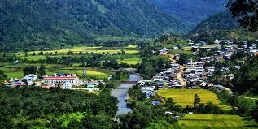

Serchhip

Aizawl is the capital of the state of Mizoram in India. With a population of 293,416,[3] it is the largest city in the state. It is also the centre of administration containing all the important government offices, state assembly house and civil secretariat. The population of Aizawl strongly reflects the different communities of the ethnic Mizo people.

HOW TO REACH ?
Nearest Airport: Aizawl
Nearest Railway Station:Aizawl
Nearest Bus Stand:Aizawl